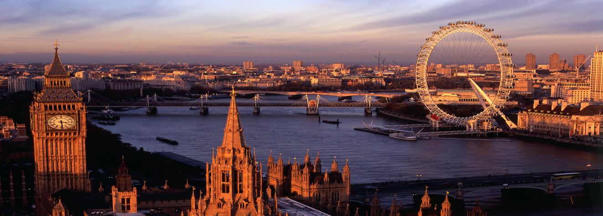

Londra, Marea BritanieLondra este capitala Angliei si a Regatului Unit. Este cel mai important centru politic, financiar, cultural si artistic al Regatului Unit, si unul dintre cele mai importante orase ale lumii, fiind, alaturi de New York, singurul oras global Alpha++. Bursa de Valori a Londrei este cea mai mare din Europa, printre cele mai mari din lume si cel mai relevant indicator al pietei monetare la nivel mondial.Conform unei analize publicate de Culture Trip în 2016, face parte din primele zece cele mai moderne orase din lume.
 Londra se întinde pe 1572 km². Împreuna cu zona metropolitană, acoperă 8382 km², populatia acesteia fiind de 9 milioane de locuitori. Aşezarea pe râul Tamisa a avut un rol foarte semnificativ în creşterea economică a oraşului. Iniţial, primele construcţii au fost pe malul de nord. Odată cu apariţia Podului Londrei, localnicii s-au răspândit şi în partea de sud. Câmpia Tamisei a contribuit considerabil la dezvoltare. Cu timpul, Tamisa a fost canalizată şi îndiguită. Câţiva dintre afluenţii săi beneficiază de cursuri subterane pentru a preveni eventualele inundaţii. Un sistem de ecluze -Thames Barrier, a fost totuşi ridicat în anii 1970 pentru mai multă siguranţă.
Daca totusi esti aici doar pentru atractiile turistice si lucrurile pe care le poti face in Londra, ei bine, trebuie sa stii ca in acest oras gasesti una dintre cele mai mari concentratii de atractii culturale din lume. De la palate regale si Palatul Parlamentului, ruine romane, castele si catedrale, pana la gradini si poduri romantice - toate transmit farmecul unui oras ce trebuie neaparat descoperit.
Așa că regasesti aici o serie de atracții turistice pe care nu trebuie sa le ratezi si vei afla de ce trebuie să vizitezi Londra măcar o data in viață.
Exista o imensa diversitate de etnii, culturi si religii, Londra fiind unul din cele mai cosmopolite orase din Europa si din lume. Aici locuiesc, permanent sau temporar, multi dintre cei mai bogati oameni ai lumii. În Londra se gasesc sediile a numeroase institutii si corporatii de importanta globala; multe cladiri importante: palate, muzee, teatre, sali de concerte, aeroporturi, statii de cale ferata, numeroase ambasade si consulate. Westminster (Palatul si Abatia) si Biserica Sf. Margareta din Londra au fost înscrise în anul 1987 pe lista patrimoniului cultural mondial UNESCO.
Clima este temperată. Verile sunt calde, iar iernile sunt blânde. Vara, temperaturile pot creşte până la 33°C, cu mici excepţii. Iarna, stratul de zăpadă rareori depăşeşte 2 cm. Deşi Londra are o reputaţie negativă din punct de vedere al ploilor, cantitatea anuală de precipitaţii ajunge la doar 600 mm pe m². Cu alte cuvinte, cantitatea de apă anuală este mai scăzută decât în Sydney sau Roma. Există totuşi un motiv pentru reputaţia negativă, şi anume variaţiile de condiţii. Pe parcursul unei zile, localnicii pot experimenta toate tipurile de climă. Poate ploua de câteva ori pe zi, cu mai multe reprize de soare arzător.Fiind un oraş foarte întins, Londra are propriul microclimat, iar temperaturile sunt cu aproximativ 5°C mai ridicate decât în împrejurimi.
Londra este împărţită în două zone mari:
1.City of London
2.City of Westminster
City of London ("Cetatea Londrei") este centrul istoric al orașului, și în același timp cel mai important cartier financiar al Regatului Unit. City-ul deține propriul corp de poliție, separat de Poliția Metropolitană.
Westminster, inima orasului, unde se concentreaza monumentele istorice, de la abatia omonima la Houses of Parliament in nord, cele doua patrulatere -Soho si Covent Garden – alaturi de Piccadilly Circus sunt sinonime cu divertismentul: aici exista teatre, istoricul magazin de ceaiuri Twinings din 1717, celebra piata Covent Garden cu teatrul Royal Opera House, Central Market Building de secol XIX plin de restaurante, magazine, spatii pentru spectacolele improvizate de artisti, in afara magazinelor chinezesti si a celor mai extravagante buticuri alaturi de firme de peep show. In schimb, Southbank, la sud de fluviul Tamisa, este regatul modernismului. Aici s-au ridicat Millennium Bridge, podul pietonal proiectat pentru a face legatura intre City, unde se afla Bursa, banci, birouri si celebrul zgarie-nori Swiss Re Tower (numit si 30 St Mary Axe, de 180 de metri inaltime, realizat de Sir Norman Foster si de Ken Shuttleworth) cu renovata galerie de arta Tate Modern.
Londra este divizată în 5 unităţi, fiecare dintre ele are propriile caracteristici, stiluri de viaţă şi comunităţi.
City (Oraşul; menționat mai sus)
West End (Capătul de vest)
West (Vestul)
South (Sudul)
North (Nordul)
Dintr-un alt punct de vedere, Londra poate fi împărţită şi în 33 de districte: City of London, City of Westminster, Kensington and Chelsea, Hammersmith and Fulham, Wandsworth, Lambeth, Southwark, Tower Hamlets, Hackney, Islington, Camden, Brent, Ealing, Hounslow, Richmond, Kingston, Merton, Sutton, Croydon, Bromley, Lewisham, Greenwich, Bexley, Havering, Barking and Dagenham, Redbridge, Newham, Waltham Forest, Haringey, Enfield, Barnet, Harrow si Hillingdon.
West End
West End ("Capătul de vest" - al vechiului oraș) este districtul comercial și de divertisment al Londrei, cea mai populară zonă pentru cei interesaţi de divertisment şi cumpărături.Tot aici se află şi renumita Piaţă Trafalgar. Odată intraţi pe Oxford Street, vizitatorii cu greu îşi pot stăpâni emoţiile în faţa numeroaselor supermagazine – John Lewis, Marks and Spencer, Selfridges şi altele. Fanii tehnologiei se pot relaxa cu ultimele inovaţii pe Tottenham Court Road. O pauză este oricând binevenită în această zonă, astfel că majoritatea vizitatorilor se îndreaptă spre Soho, cartierul boem al Londrei. Zona este pur şi simplu aglomerată de cafenele, sex shopuri, restaurante şi puburi.
Împreuna cu City, zona West End formează centrul Londrei ("Central London").
West
În vestul Londrei se găsesc cartiere rezidențiale de lux, cum ar fi Notting Hill, Kensington, Chelsea, parcuri precum Richmond (cel mai mare din Londra), precum și arene sportive ca Twickenham, stadionul de acasă al echipei naționale engleze de rugby. În White City se găsește cartierul general al BBC, iar mult mai spre vest, în burgul Hillingdon, se află aeroportul Heathrow.
South
Sudul Londrei atrage atenţia prin numărul mare de afro-americani care au emigrat în anii '50-'70 din zona Caraibelor. Tot aici se află şi districtul Wimbledon, cu parcul și arenele de tenis pe care se organizează Turneul de tenis de la Wimbledon, dar şi Greenwich, unde se află parcul cu același nume și Observatorul Regal din Greenwich, care marchează meridianul zero al lumii.
North
Nordul oraşului este dominat de diverse coline care oferă vederi excelente ale orașului, fiind o regiune mai deluroasă. Este zona perfectă pentru amatorii de fotografie care doresc să surprindă Londra în diverse ipostaze. Printre cele mai renumite suburbii din zonă se numără Camden, Tottenham, Islington, gazdă a clubului de fotbal Arsenal FC, Hampstead, Harringay şi Highgate.
AFACERI SI ECONOMIE
Doar zona metropolitană a Londrei produce mai mult decat Rusia sau Brazilia. City este cel mai mare centru financiar al capitalei britanice. Este populat cu firme de avocatură, contabilitate sau asigurări, dar şi cu banci sau societăţi de valori imobiliare. Canary Warf este al doilea cel mai puternic district financiar. Este mai mic, dar şi mai nou decat City. Cu toate acestea, găzduieşte câteva nume mari, ca de exemplu HSBC.
Deşi poate părea greu de crezut, în Londra se vând şi se cumpără mai mulţi dolari americani decât în New York. Cât despre euro, tranzacţiile depăşesc toate celelalte oraşe europene la un loc. Turismul este o importantă sursă de venit, cu sute de mii de angajaţi şi milioane de turişti. Cât despre portul local, este al treilea din regat.
EDUCATIE
Londra este un centru important de educaţie superioară. Cu 43 de universităţi, este cel mai mare centru universitar din Europa. În anul şcolar 2008-2009, au avut aproximativ 412.000 de studenţi, adica 17% din numărul studenţilor din întregul regat. În acelaşi an, aproape 100.000 de studenţi au fost străini. În 2013, University College London a ocupat locul al 4-lea în lume, iar Imperial College London a fost pe al 5-lea loc. King's College London a ocupat poziţia a 19-a. În 2010, cursurile de masterat în administrarea afacerilor ale London Business School au fost declarate cele mai bune din lume.
SPORT
Londra a găzduit Sporturile Olimpice de vară de trei ori – în 1908, 1948 şi 2012. Fotbalul este cel mai popular sport local. Drept urmare, Londra are 14 echipe în diverse ligi. Cele mai importante 6 echipe locale sunt Arsenal, Chelsea, Crystal Palace, West Ham United, Fulham şi Tottenham Hotspur. În 2012, Chelsea a devenit prima echipa din Londra care a câştigat UEFA Champions League. Încă din 1924, Wembley a fost stadionul de acasă al echipei naţionale. Noul stadion are 90.000 de locuri şi exact acelaşi scop.
Totodată, există şi foarte mulţi impătimiţi de rugby şi cricket în Londra, dar şi multe echipe cunoscute în toată lumea.
In continuare, puteti citi mai multe curiozitati despre istoria Londrei si totodata alte informatii despre capitala Regatului Unit.